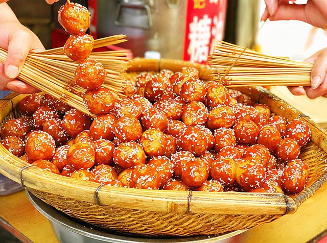
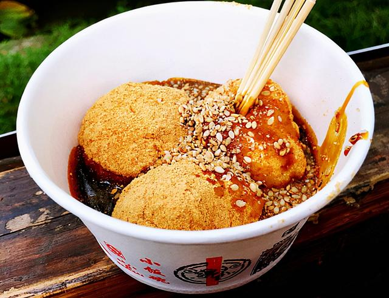
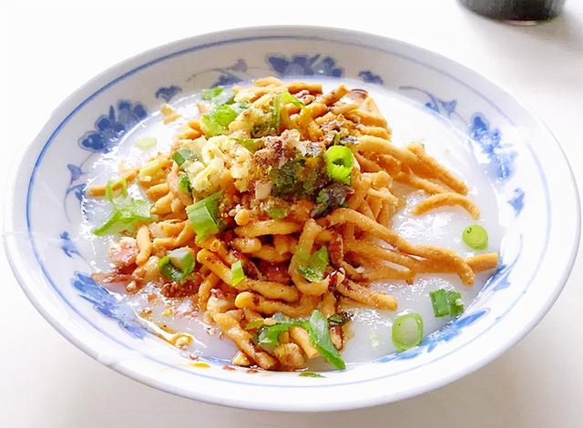
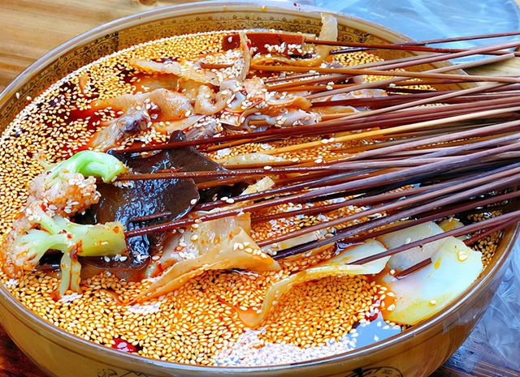
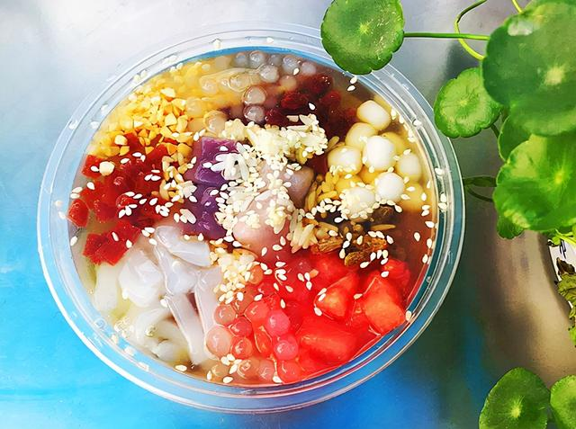
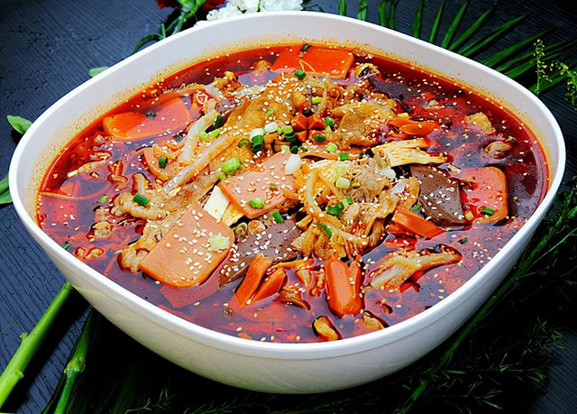

首页
家乡简介
景点
美食
视频
登录/注册

糖油果子
糖油果子是四川成都的传统小吃，是用糯米、红糖和芝麻为主料，先油炸，再裹上白芝麻，最后用竹签串起来即可。看起来色泽黄亮，吃起来外酥里糯、香甜可口。

三大炮
三大炮在成都美食里算是名气很响亮的一个，因为在制作的过程中会发出“当、当、当”的声音，所以取名三大炮。吃起来香甜可口、不腻不粘。不过由于成都的高速发展，制作三大炮的这门手艺日渐衰落，现在能买到正宗三大炮的只有文殊坊和锦里这两个地方了，其他很多地方只有在每年举行一些大型活动时才能买到。

油茶
四川的这个油茶和北方人喝的油茶可不是一个东西，四川油茶是用黄豆和大米为原料制作出来的可以当早餐的小吃，麻辣鲜香。

钵钵鸡
钵钵鸡是成都的传统名小吃，是把煮好的鸡肉用竹签串起来，然后放进调好料汁的“钵钵”里，吃起来皮脆肉嫩，麻辣鲜香，被成都人命名为优质名小吃。钵钵鸡是每一位来到成都的外地游客都忍不住要品尝的美食。

冰粉
冰粉是四川农村人夏天最喜欢吃的小吃，是用一种植物的种子经过反复搓揉出的汁液凝固而成的美食。吃的时候加上一点红糖，清凉、冰爽，大人小孩都很爱吃。

冒菜
冒菜是成都的特色美食之一，是把各类食材放在调好的汤里煮熟，然后配上调料一起吃。也有人说冒菜是一个人的火锅，火锅是一群人的冒菜，但是其实冒菜和火锅还是有区别的，冒菜的汤是可以直接喝的，而火锅的锅底一般是不会有人直接喝的。
1
2
3
下一页